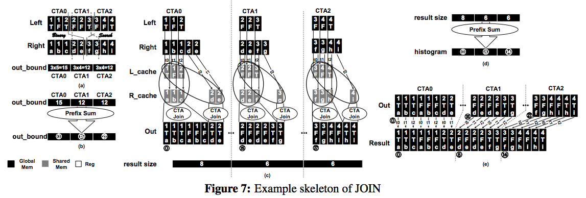
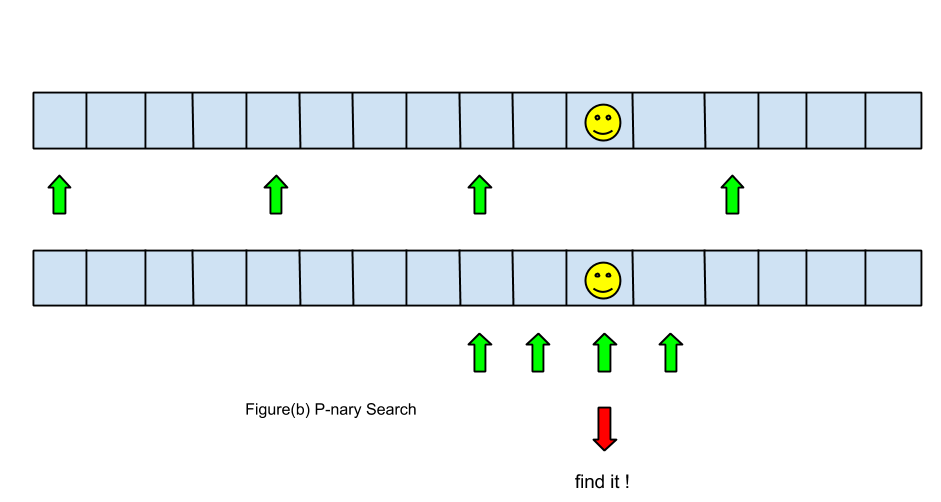

Summary
We want to analyze the performance of implementing database operations on a GPU versus a CPU. We have chosen to implement the relational algebra operations SELECT and JOIN on a GPU to simulate the relational database queries in order to investigate the viability of accelerating a database on GPU. To fairly analyze the performances on GPU and CPU, we have implemented fairly optimized corresponding operations by using SIMD, and we have implemented sequential versions of the operations on the multi-core CPU machines to validate the results as well.
Background
SQL as Relational Algebra
Relational algebra is a procedural query language, which consists of a set of operations that take one or two relations as input and produce a new relation as their result. The fundamental operations in relational algebra are: select, project, union, and set difference. SQL is a superset of relational algebra, so it is relationally complete which means that the language can perform all basic and meaningful operations on relations through relational algebra. Operators in relational algebra are not necessarily the same as SQL operators, even if they have the same name. For example, the SELECT statement exists in SQL, and also exists in relational algebra. These two uses of SELECT are not the same. The DBMS must take whatever SQL statements the user types in and translate them into relational algebra operations before applying them to the database. SQL statements are given to parsers that convert the queries into equivalent relational algebra expressions. For instance, this SQL query
is equivalent to the following relational algebra expression
SELECT and JOIN on a GPU and a CPU
To implement SELECT and JOIN, we referred to several papers that have been written about translating SQL queries into relational algebra. We wanted to efficiently use the computation power and memory space of the GPU and CPU, respectively, so we enhacned the algorithms of each of the operations. Each operation is run on several threads on the GPU, so the algorithms require quick division and merging of the tables. On the CPU, we wanted to execute the queries sequentially and with some parallelism through various techniques we have learned throughout the course such as OpenMP and SIMD parallelism. We initially considered memory transfer of the data between the CPU and GPU as part of our implementations, which would require some usage of MemSQL to efficiently store the tables in memory. However, more research showed that memory transfer times can vary based on the machine that is in use, so we chose to eliminate this part of in our implementations of the queries.
HW + SW Information
We are executing the relational algebra operations on a GTX 480s GPU and on a quad-core CPU. These machines were readily available to us through the CMU computers, and we found it best to use them for testing purposes. Although there are other machines that will give better performance and are more optimal, we chose not to switch over machines in the middle of our project. The programs are written in CUDA on the GPU and in C++ on the CPU.
Algorithm & Approach
General Approach
No matter which operation is implemented in GPU, there are three general stages that the algorithms follow:- Stage 1: Partition tuples into blocks of threads
- Stage 2: Mapping tuples based on predicate and generate histogram cross blocks
- Stage 3: Gather resulting tuples into condensed buffer based on histogram
Table and Tuple Data Structures
We decided not to store actual tables in an in-memory database because the GPU memory is limited, and we wanted to be able to store large tables. So, we wanted to store the tables and tuples in an efficient and simple data structure to simplify the implementation given the project scope. Each relational table is stored as an array, where each tuple has either two or three data entries of integers. For instance, when a relational table, or array, has multiple columns, each tuple is stored as an int2* or int3* in CUDA. By storing the tuples as integer values, we were easily able to compare tuple values which was important when finding qualifying tuples for SELECT queries and to merge tuples for JOIN queries.SELECT Operation
The GPU takes in the input table and splits it into blocks of tuples, assigning tuples to threads in each block. Each thread then performs the "select" operation on the tuples and reports whether the tuple is a match for the query. If it is a match, the thread stores a 1 in a match_index_array at the tuple's index. The GPU then applies prefix sum to each block, which counts the number of qualifying tuples in the block and stores the tuples in the block's condensed buffer. The sizes of the condensed buffers are then translated as the "result size" for each block. Next, the GPU performs a prefix sum of the result sizes and creates a histogram from which it maps the qualifying tuples to the final condensed output buffer.
In addition to executing one query at a time on the GPU, we added an additional implementation of SELECT which supported streams of queries. The streams allowed for a pipelining effect so that the GPU could receive and execute multiple queries at a faster rate than executing queries one at a time. Our hope was that this would help hide the overhead of computation and the bottleneck that arises from the GPU-startup and disk accesses. Below is an image depicting the SELECT algorithm from the GPU as taken from the academic paper, "Efficient Relational Algebra Algorithms and Data Structures for GPU".
On the CPU, we implemeneted a simple serial version as well as a parallel version that uses SIMD instructions to improve performance. We felt that it was fair to compare a parallelized implementation on the CPU to a parallelized implementation on the GPU to accurately measure better performance of the operations. The CPU version uses all four cores on the machine by placing pertinent blocks of code in parallel for loops. Each thread checks tuples from the table to see if they are qualifying, and then follows a similar algorithm as in the GPU by performing a prefix sum on the matching indeces of the tuples. This allows for maximum parallelism on the CPU using SIMD.
JOIN Operation
The JOIN operation is the most complicated algorithm for SQL operations, and it is further complicated by the merge stage of the algorithm which involves identifying subsets of the partitioned relations with overlapping attributes and performing the cross product for each subset. This presents a significant problem to parallel implementations of the algorithm that eventually writes to a statically allocated, dense array.To improve the efficiency of the algorithm, we first sort the tuples in each table. Similar to the algorithm for SELECT, the GPU then splits up one table into similar sized blocks, and assigns threads to tuples within each block. We then find tuples in the second table that fall in the bounds of each block by performing a p-nary search algorithm on the second table. Once the number of possible matching tuples is computed by multiplying the number of matching tuples in each table, we perform a prefix sum operation on the number of tuples within each block which gives us an upper bound for the total number of qualifying tuples from the query. We then merge each tuple within each block with its respective matching tuples from the second table, and place each joined tuple into the block's condensend output buffer. This gives us the "result size" of each block, and we perform another prefix sum on the result sizes to create a histogram of the final result. Each block then merges their qualifying tuples into the final condensed output buffer.

The JOIN operation is quite similar on the CPU as on the GPU. One difference from the algorithm for SELECT is that we must find matching tuples from a second table for each tuple in the first table. To do this, we have tried two matching algorithms: binary search (as in the GPU version) and brute force. In brute force, each tuple from the outer relation goes through the entire inner relation, which gives O(M) time for every search, where M is the size of the inner relation. In binary search, it is O(logM) for every search. Since we want utilize the fact that the relations are already sorted, binary search outperforms the brute force algorithm. Once we find the matching tuples for each tuple in the first table, we perform the merging operation and input the joined tuples directly into the output buffer. Since the CPU executes the JOIN queries using a single thread, we did not need to implement prefix sum or the use of histograms to find the solution.
Execution & Optimization
SELECT on GPU
General CUDA Implementation
We use 512 threads per block and maximumly 65535 * 65535 blocks. There are three CUDA kernels used for SELECT, and they are partition, exclusive scan and coalesced. The most difficult part is to have a efficient implementation of exclusive scan that can apply to large number of elements across blocks. For the prefix sum in the partition kernel, we adopt the shared memory exclusive scan we used in assignment 2. For prefix sum acorss blocks, we have tried several existing implementation thrust library and scanLargeArray example in CUDA SDK. Thrust implementation is the easiest to use and quite fast, but thrust's exclusive scan can not be used in streaming. scanLargeArray can apply to super large array, but it is quite complicated to use it in streamming. Therefore, we end up implementing our own version exclusive scan that can apply to relatively large array.
Optimization By Using Streams
The main overhead is from transferring data between the host and the device, becuase it is really slow. In general, there are two approaches can be used to deal with this issue: data compression and pipelining. Data compression actually reduces the latency by reducing amoung of data to transfer while pipelining hides the latency by doing computation and transfer simultaneously. For our project, We try to explore the potential of hiding the latency by setting up CUDA stream, because our implementation already simplifies the structure of relations as we mentioned in the data structure section, and pipelining seems a more intersting way to investigate. We set up three-way CUDA streams, and enqueue the CUDA operations( kernels, cudaMemcpy etc) into corresponding queues in depth-first way. The resulting execution layout is in Figure(a). While stream 1 is doing the computation, stream 2 is transferring data from host to device, stream 1 is transferring data from device to host. So, in theory, the data transfer bottleneck would be completely hidden by pipelining. However, the actual execution time of computation is not the same as the time of transferring data, the latency is not completely hidden.
SELECT on CPU
SIMD Implementation
We implemented two versions of SELECT on CPU: single threaded and SIMD version by using ISPC. The single threaded version is used to validate all of the SELECT operations we have implemented in this project. The SIMD version is used to do a fair comparison with the GPU version. We adopt the similar algorithm used in GPU to implement our SIMD SELECT. It first scatters tuples to each program instance, and each program instance stores the resulting tuples into their private buffer, and then exclusive scan on the number of resultiing tuples that each program instance has, and finally put tuples into the final condensed buffer. The actuall performance of this implementation is not as good as we expect, we think the reason is the nature of SELECT operations is quite divergent, which results in unbalanced workload among program instances. Besides, the pattern of access to memory requires gather and scatter ( each program instance does not access memory sequentially), which casuses more performance degradation.
JOIN on GPU
General CUDA Implementaiton
We still use 512 threads per block and maximumly 65535 * 65535 blocks. The implementation is basically based on the algorithm described above, but there are more complicated issues when implement JOIN compared with SELECT. One nature of JOIN operations is that the number of resulting tuples could be much larger than either orinal relations, and we could not know this number until the very late stage of the operation. In the worst case, every tuple in the outer relation can join the entire inner relation, but very rarely. We cannot always assume the worst case and allocate resulting buffer as M*N, since the GPU memory is very limited, and if M and N are really large, the resulting buffer with size M*N could be very easily beyond the memory capacity of GPU even when the actual number needed is not big at all. To address this issue, JOIN needs an extra step to estimate the upper bound number of tuples for each CUDA block. We assume we are working on sorted tuples, so tuples threadPerBlock[0] and threadPerBlock[511] work as pivot elements to find the lower bound and upper bound in the other relation, and this matching step significantly reduces the number of tuples the outer relation need to traverse in the inner relation. The paper is using binary search for each block to find out lower bound and upper bound, which is really inefficient in GPU. Instead, we implement p-nary search based on the paper "Parallel Search On Video Cards", and tweak it for our case. Figure(b) shows how p-nary search works. 
The original p-nary algorithm tries to use all of threads cross blocks to find out the matching items, and in our case, we only use all of threads inside one block to find out the boundaries for this block, therefore, we can look for boundaries for all blocks at the same time. Besides, p-nary outputs the items that match, but if there are duplications in the relation, there is no guarantee which one the search will output. For example, if we have 3 consecutive and duplicated keys in the relation, and the search only outputs the position of the middile one for the lower bound of a block, then it would miss the first tuple that can be actually joined, and the correctness of join is violated. Therefore, we makes two versions of p-nary search, one for searching for lower_bound, where we only keep result that has lower index and one for upper_bound, where we only keeps result that has larger index. The reason we do this is to make sure the correctness of join that no tuple is left.
JOIN on CPU
Single Threaded Implementation
Implementation Issues
There were several issues to consider when implementing these operations. First, the GPU algorithms are theoretically simple but we ran into coherence and atomicity issues when implementing them. The threads needed to update their values in the output buffers in a sorted order to display the qualifying tuples of the query correctly. Second, when implementing parallelism on the CPU, we attempted to use OpenMP since it provided several instructions to help execute parallelism across the tuples for each query. However, we discovered that it wasn't as simple as making the "for" loop in the sequential version a "parallel for" -- we ran into atomicity issues similar as in the GPU version. So, when attempting to execute a similar algorithm on the CPU as on the GPU, we discovered that the speedup actually decreased and was worse than the simple sequential version.
Results & Analysis
SELECT Operation
Here are the results from SELECT operation executed on CPU and GPU. We executed SELECT on the GPU with CUDA with data transfer (specified as CUDA with no streams), without data transfer (specified as CUDA Kernels), on the GPU using streams, on the CPU using a single thread, and on the CPU implementing SIMD and tasks.Performance vs. Table Size
These results display the performance speed of each implementation of SELECT on the GPU and CPU on tables with different number of tuples. The time (in milliseconds) is shown on the graph in a logarithmic scale to allow all the data to be represented in the same range.
Speedup vs. Table Size
The results below show the speedup of each implementation from the CPU single threaded version of SELECT. Again, the range of speedup is depicted in a logarithmic scale of milliseconds, and we show the speedup of each implementation against each of the table sizes.
JOIN Operation
Here are the results from JOIN operation executed on CPU and GPU. We executed JOIN on the GPU with CUDA with data transfer (specified as CUDA general), on the without data transfer (specified as CUDA Kernel), and on the CPU using a single thread.
Performance vs. Table Sizes
The results displayed below show the performance speed of each implementation of JOIN on the GPU and CPU, executed on tables of varying sizes. The time (in milliseconds) is shown on the graph in a logarithmic scale to allow all the data to be represented in the same range.
Speedup vs. Table Sizes
The results displayed below show the speedup of the GPU implementations of JOIN compared to the CPU single threaded implementation. Again, the range of speedup is depicted in a logarithmic scale of milliseconds, and we show the speedup of each implementation against the varying table sizes.
Analysis
SELECT Operation
We can see from the performance and speedup results that the operation on the GPU without data transfer had the best performance and speedup compared to the CPU single threaded version. However, we must realize that data transfer is an essential part of the real implementation so this does not reflect the real-life situation of SELECT queries implemented on the GPU. Given this information, we know that we should consider the costs of data transfer when analyzing the execution times and speedup. This shows that executing SELECT on the GPU with streams or on the CPU with SIMD and tasks parallelization seem to be the next best options when considering performance time. We can see that implementing SELECT in CUDA with streams shows a performance time of 0 for the two smaller table sizes, and we realized that this is because of the table sizes are so small that when executed in parallel on the GPU, it has a very minimal performance time. This is also the reason for the near to none speedup when compared to the CPU single threaded version for the two smaller table sizes.
Implementing SELECT in CUDA without streams performed nearly similar to implementing the operation on the CPU with a single thread because, although the algorithm for executing a single query is highly parallelized, the overhead generated from the computation of executing a query slows down the process when executing several queries. This is why implementing streams in CUDA enhanced the performance and speedup, because we were able to speedup the process of analyzing the query, retreiving the tables, and executing the query in a pipelined fashion.
JOIN Operation
TO DO ASAP!
GPU or CPU?
WHAT DO WE THINK?!?!From our analysis, we have deduced that executing SELECT and JOIN on the GPU or CPU depends on various other factors, although CUDA with streams and CPU with SIMD parallelization are most optimal from our implementations. Even though we were not able to implement JOIN using streams in CUDA, we can see from our results and analysis that this would improve the performance even more from simple CUDA with data transfer included. If we were able to implement JOIN on the CPU using SIMD parallelization, this would probably be similar in performance to CUDA with streams, so we are not able to choose a machine for certain. Also, whether we choose to use CPU or GPU will depend mainly on the size of the tables we are accessing and the complexity of the queries. If the tables are extremely large, then transferring the data from the CPU to the GPU and back may result in a bottleneck effect and slow down the performance. Similarly, if the query is extremely complex, then it would be better to take the data transfer costs because the GPU will be able to execute the query more efficiently.
References & Division of Work
- "Efficient Relational Algebra Algorithms and Data Structures for GPU"
- "Parallel Search On Video Cards"
- Database eLearning Website
Division of Work
Yingchao Liu
Research
- Found several research papers regarding database operations on GPU
- Researched the use and benefit of MemSQL
- Researched algorithms for SELECT and JOIN
- Researched the use of streams and other possible optimizations
Implementation
- initial CUDA program of SELECT
- SELECT optimization using streams
- SELECT optimization using CUDA kernels
- SELECT optimization using SIMD
- initial sequential program of SELECT
- initial CUDA program of JOIN
Write-Up & Analysis
- Gathered data on speedups for each implementation
Mitra Raman
Research
- Read papers regarding database operations on GPU and CPU
- Researched and downloaded MemSQL to test the possible usage
- Researched implementations of SELECT and JOIN algorithms
- Researched possible optimizations for sequential versions using OpenMP
Implementation
- SELECT optimization using OpenMP
- initial sequential program of JOIN
Write-Up & Analysis
- Created graphs for each implementation, showing speedup vs. table size
- Compared speedup and performance of implementations for SELECT and JOIN
- Performed analysis on CPU vs GPU for SELECT and JOIN
- Created and designed final project webpage (this one!)
- Updated project schedule